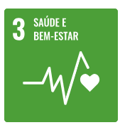

Sobre o Projeto
Linha da Vida
Em algum momento da minha vida, um que eu não sei mensurar ao certo, a
dança
deixou
de ser uma prática e
se tornou parte de mim, é difícil dizer quem eu teria me tornado ao longo do tempo se não
tivesse
insistido em dançar, sempre que paro para pensar todos os aspectos da minha personalidade
foram
influenciados de alguma forma, e não é para menos afinal são 12 anos de prática.


Valores
- Mens sana in Corpore sano - A dança e seu poder de transfromar o ser, onde corpo
e mente se entrelaçam e florescem.
- Resiliência - A dança é uma arte que exige treino e determinação, desenvolve a
capacidade de expressão, superação de desafios e encontra beleza nas adversidades.
- Ética - Sócrates, um dos grandes filósofos gregos, através de Platão em Leis VII,
considerou a Dança
como a atividade que formava o cidadão por completo.
 Objetivo do Projeto
Objetivo do Projeto
O objetivo do projeto é fornecer uma plataforma para bailarinos de todos os
níveis manterem seu progresso na prática da dança. Com base em coreografias e festivais o
usuário tem a possibilidade de analisar seus pontos fortes e habilidades a desenvolver. O
projeto também busca encorajar quem deseja se envolver e iniciar na prática.
Objetivos da ONU


Desenvolvimento
Planejamento e design
Linguagens
Ferramentas
Base de dados
Agradecimentos
Dedico este projeto ao todo corpo docente da SPTech, a minha família por ser meu
suporte e fortaleza e por fim, minha professora de
Ballet, Marina, por transmitir com excelência todo seu conhecimento sobre dança.
Sem vocês este projeto não seria possível.
Muito Obrigada.
Giovanna Beltrão